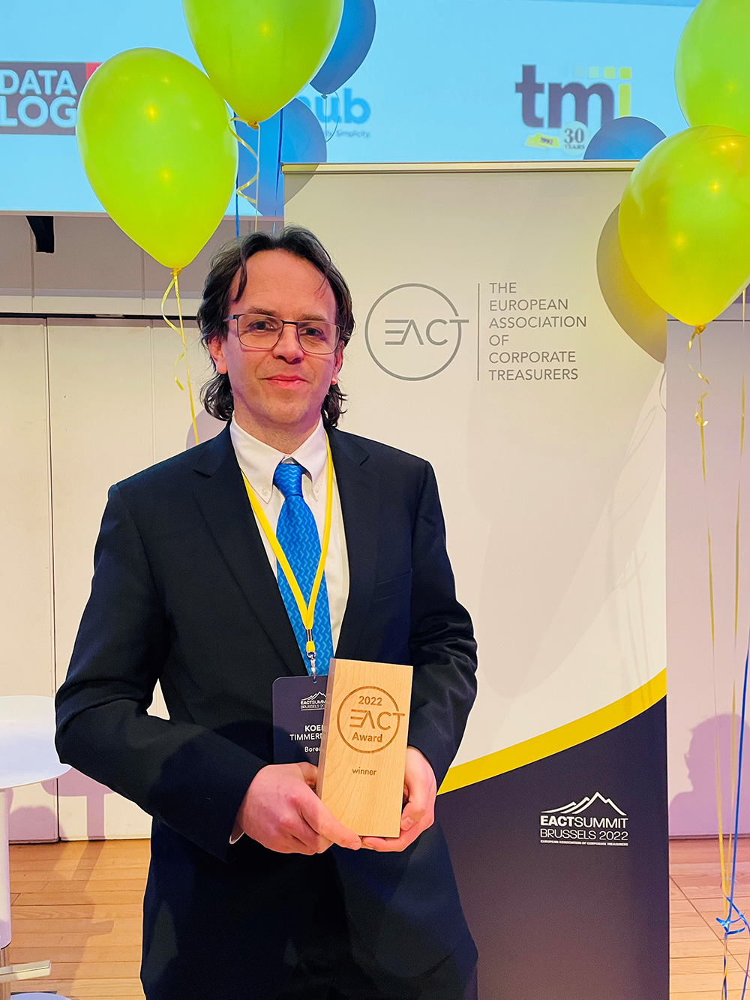

For the 3rd year in a row, the EACT recognises a project realised within the European Treasury Community.
From among a field of strong competitors, Borealis AG has been named the winner of the EACT Award 2022. Congratulations! The Austrian company is a major producer of polymer solutions and chemical fertilisers, which is headquartered in Vienna, impressed treasury voters through implementing a cross company hedging process and strict pricing-policy to manage its commodity exposure.
Natural gas, the main raw material in the production process of fertilisers, has been subject to unprecedented volatility and record high prices throughout 2021. Despite these adverse market conditions, Borealis Treasury helped through a hedging programme and strict pricing-policy, to realise record profits.
This cross functional project was driven by the Borealis Treasury and Funding team and included Procurement and Sales. A major challenge was to create awareness in the Sales team about the exposure to the swings in the gas price and convince that Treasury can provide tangible solutions to the issue. The major achievement of the project resulted in the company being one of the few producers able to throughout the phase of extreme feedstock volatility manufacture profitably. In addition, customers looking for new suppliers in a challenging environment were attracted.
Borealis AG was nominated by the Austrian Corporate Treasury Association (ACTA). Koen Timmermans, Financial Risk Manager, was the nominee company representative. He joined the physical announcement of the Award winner by Francois Masquelier, EACT Chair, and offered his thanks to the treasury team and all involved in the initiative. Koen Timmermans explained that “the intense cooperation between Treasury, procurement and sales has been the key driver for the success. It is also an example of how Treasury can be a key contributor to the business and a true business partner beyond a support function.”
François Masquelier, EACT Chair, said “The EACT Awards are a great way to reward innovation in treasury within our community across Europe. This year, once again, I am particularly proud of the interesting and ambitious projects recognised. Rewarding the most creative treasurers makes sense to me in a world of constant changes and fast-evolving IT technologies. EACT is delighted to encourage and showcase such innovation."
Congratulations to the six other finalists. These were:
Belgium (ATEB) - Sanofi
SANOFI launched a multi-year project to fully transform its finance function for facing future challenges. This program included the fundamental transformation of financial systems, processes, and organizational alignment to to unleash the power of the Finance function and optimize delivery potential. Treasury embarked on that initiative and developed a "Treasury Core Model" - TCM. The ambition was to redesign, adapt, rationalize treasury processes, set solid foundations for a new treasury organization with implementation of treasury best practices, and core treasury processes powered by a "state-of-the-art" system fully integrated with Finance.
France (AFTE) - Verallia Packaging
Environmental challenges and the need for a more sustainable economy are at the heart of the concerns of all. For a sustainability strategy to be credible, a firm must not only implement quantitative, time bound targets, but ensure they are ambitious and go beyond merely "business as usual". Verallia issued 2 Sustainability Linked bonds in 2021 deeply rooting its ESG commitments to its Capital Structure.
Luxembourg (ATEL) - Majorel Group
In 2021, Majorel Group has managed to reduce its working capital during pandemic-related challenges, by creating a cash culture and monitoring closely the collection through an innovative hybrid approach to governance, while the group managed to achieve one of the fastest IPOs in the history of Euronext Amsterdam.
Greece (HAT) - BEAT (FREE NOW Group)
In January 2021, the company initiated the double implementation of the ERP and the TMS with the ultimate goal to optimize and automate all of its accounting and treasury processes across all markets. As of February 2022, the company is finalizing the implementation of a fully automated process through an all systems integration. BEAT becomes a leader in Treasury Innovation within Greece, achieving one of the most parallel cutting edge systems integration in the market. BEAT aspires to "drive" more companies within Greece to follow the example and grasp the benefits of ERP and TMS systems interconnectivity, automation and standardization.
Netherlands (DACT) - Gasunie
As part of its 'license to operate' in the energy transition, Gasunie's strategy is well geared towards helping achieve several UN SDGs and established nine Gasunie Green Deals and, in order to align its financing strategy with these objectives, Gasunie created a sustainable finance strategy. As a first step, Gasunie entered into a Sustainability-Linked RCF in 2020, linking the credit spread to sustainability performance. In September 2021, Gasunie took the next step by becoming the first European gas transport company to issue a Sustainability-Linked Bond ("SLB"). In its SLB-Framework two KPIs that are relevant, core and material to Gasunie's business model and sustainability profile have been selected:
- 2030-Methane emissions reduction of ca. 50% vs 2020
- 2030-Scope 1 and Scope 2 greenhouse gas emissions reduction (market based) ca. 30% vs 2020
United Kingdom (ACT) - Tesco plc, UK
In 2021 Tesco became the first UK corporate and retailer to deliver a Sustainability-linked SCF solution with a sustainability-linked element focussing on the environmental pillar of ESG, targeting an ambitious emissions reduction strategy. The programme supports 200 Tesco suppliers and enables those tackling climate change to access lower funding costs.
-
Join us at the ACT Annual Conference at ACC Liverpool, UK, on 21-22 May 2024. A limited number of free places are available for EACT members.
View MoreThe European Associations of Corporate Treasurers (EACT) is pleased to invite its members to submit nominations for the 5th EACT Award in 2024.
View More
We are delighted to reveal the results of the 2023 EACT survey. Discover the top priorities of 250 group treasurers from European multinationals.
View MoreThe European Association of Corporate Treasurers (EACT) is delighted to welcome a new representative for the Association of German Treasurers (VDT).
View MoreWe are delighted to reveal Merck Group as the winner of the 2023 EACT Award, nominated by VDT.
View More